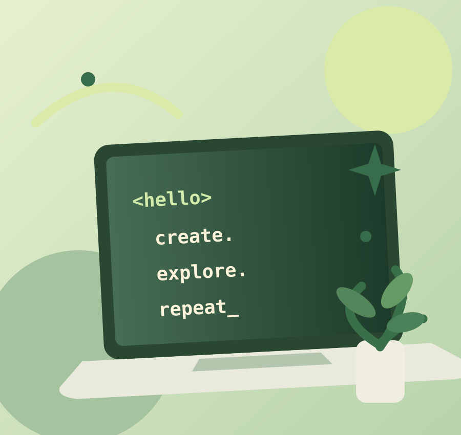

Quote Collection
Fifteen original thoughts about learning, courage, and creativity, plus a random quote generator.
View quotes →Welcome to my first website. This is a little space to experiment with HTML, CSS, and JavaScript — and discover how ideas turn into interactive web pages.

Every page adds a small skill, from writing HTML content to making things move with JavaScript.
Fifteen original thoughts about learning, courage, and creativity, plus a random quote generator.
View quotes →Five ideas for websites I could build while practicing web development.
See ideas →A playful switch that turns itself off. Because not everything has to be useful.
Try it →This small site is the beginning of my web development journey.
Try the interactive demo ↗